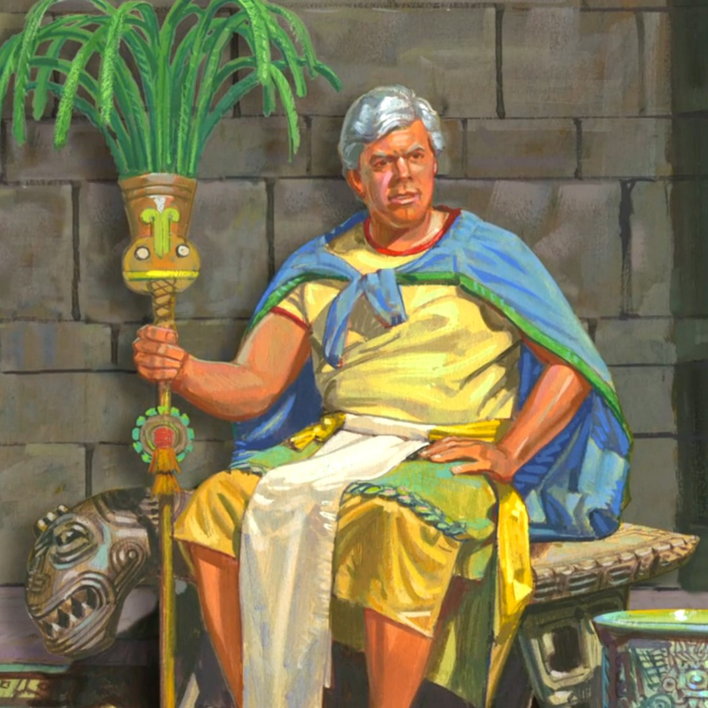

Brief biography
circa 145 B.C.

Limhi was one of the sons of King Noah, the grandson of Zeniff, and the last king of his people before their reunification with the people of Mosiah. Limhi was made king over his people after his father was killed and the Lamanites subjected his people to bondage. As king, he was forced to accept a treaty with the Lamanites that required him and his people to pay half of everything they possessed. Limhi was also forced to defend against a Lamanite attack caused by the abduction of the Lamanite daughters by the fugitive priests of King Noah, an act which the Lamanites wrongly attributed to Limhi's people. After a series of subsequent Lamanite abuses, the king reluctantly agreed to allow his people to go out to battle, resulting in the death of many of his men. Limhi's people were eventually delivered by Ammon and his brethren, and settled in the land of Zarahemla.
Total recorded words -- 1,385
Insights into words and phrases
One notable feature of Limhi’s words is that they appear in a context where a scribe would likely be present to record them, as was the practice in the ancient Near East, such as a public address to his people at a covenant-renewal ceremony (Mosiah 7:17-33), the interrogation of Ammon and his brethren (Mosiah 7:8-13), the interrogation of the Lamanite king (Mosiah 20:13-22), and an inspection of records with Ammon, a foreign ambassador (Mosiah 8:6-12). This lends a touch of authenticity to Limhi’s words.
In this part of the Book of Mormon’s narrative, all the quotations come on official occasions; no informal chit-chat between Limhi and Gideon or Ammon is preserved, everything is on the official level where the scribe would be there to record it.1
Although Limhi’s words in the Book of Mormon are not extensive, his references to other sources are a hallmark of his writing. At times, his comments read like a pastiche of quotations. There are more than fifteen of these from various sources. Where quotations can be identified, the citation is given before the quoted source appears in the narrative, as where Limhi quotes passages from Zeniff’s account, or cites Abinadi’s testimony before it is given several chapters later. Such examples would be difficult for a writer to produce, if the events never happened; although they make sense as presented in the text.
The variety of sources that Limhi uses provides insight into the king’s character. They "show a man very well versed in the records of his people. Limhi was probably more comfortable in the library than the throne room."2 Further support for this view is found in Limhi’s discussion of the Jaredite records. "Knowest thou of anyone that can translate? For I am desirous that these records should be translated" (Mosiah 8:12). Before he even begins to discuss how his people can escape from bondage to the Lamanites, the king wants to know if Ammon can translate the Jaredite records (Mosiah 8:6).
It is not clear that Limhi ever desired to be a king, but he does appear to have done what was in his power to rule justly, and to assist those in need among his people during a difficult time. He said that he "grieved" for the afflictions of his people (Mosiah 8:7). He provided for the widows and children of those killed by the Lamanites (Mosiah 21:17), tried unsuccessfully to bring the priests of King Noah to justice (Mosiah 21:20-21), and sent a search party to locate and appeal to the people of Zarahemla for help (Mosiah 21:25; 8:7-11). His willingness to enter into a covenant to serve God with his people also speaks to his humility (Mosiah 21:31-33; 25:17).
Personal application
It seems noteworthy that a son of King Noah, who had no illusions about the
wickedness of his father, his priests, and many of the people, was able to
be a relatively good king. Perhaps Limhi’s appreciation of records and
scripture provided stability in his life and might help explain why he was
more righteous than many others who surrounded him. As we also study the
scriptures, we can find stability in our own lives and become more righteous
in an increasingly wicked society.
1 John Gee, "Limhi in the Library,"
Journal of Book of Mormon Studies 1/1 (1992): 65-66.
2 Gee, 65.